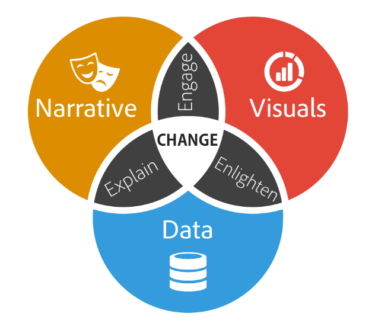
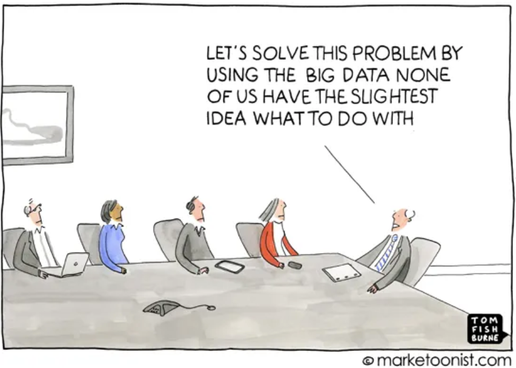
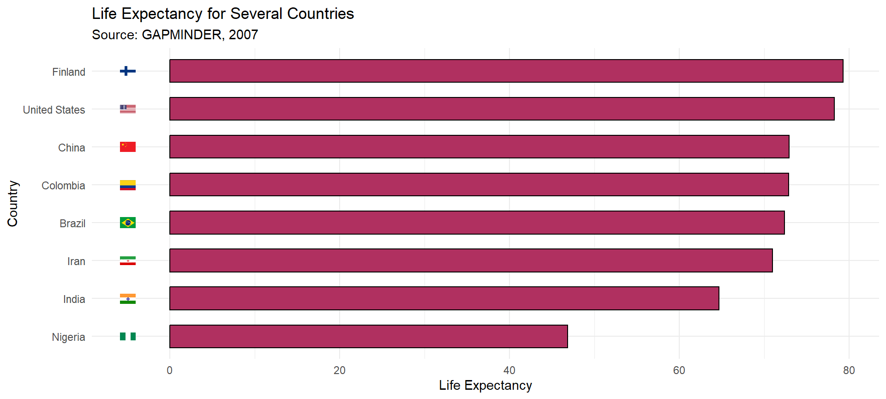
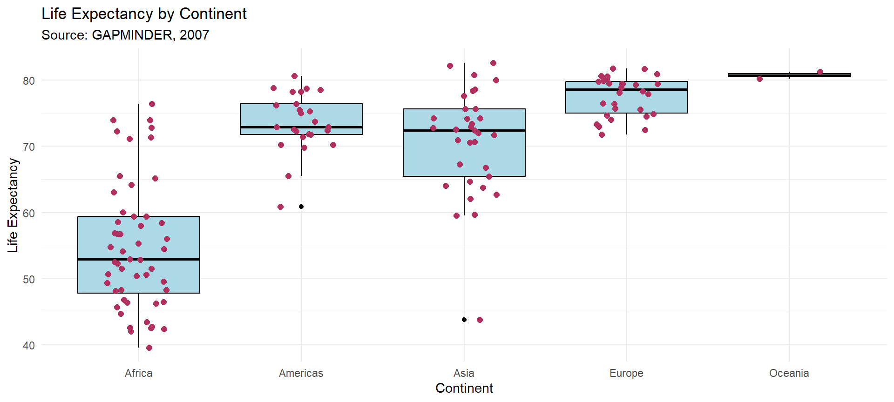
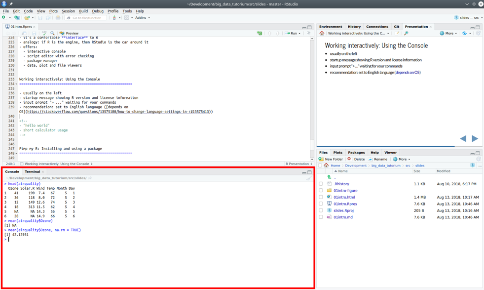
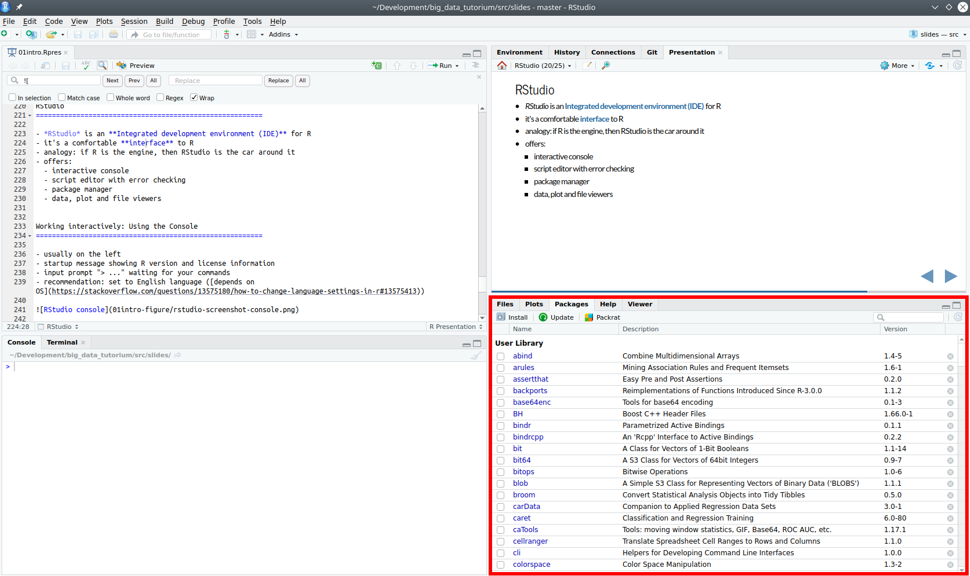

Las personas encargadas de tomar decisiones deben evolucionar junto con un entorno que se caracteriza por un flujo continuo de información.
Estructura del curso
Estadística Descriptiva
Comenzamos suponiendo que ya tenemos los datos.
Exploraremos formas de resumir datos usando R:
Visualización de datos.
Construcción de estadísticas descriptivas.
Estadística inferencial
Aprenderemos a construir intervalos de confianza, que nos dicen con qué tanta precisión estamos calculando un promedio.
Aprenderemos a elaborar pruebas de hipótesis, que nos dicen si dos grupos son distintos en cuanto a alguna característica.
Usaremos regresiones, que explotan las relaciones entre dos o más variables para predecir y para prescribir.
Storytelling with Data
When you combine the right visuals and narrative with the right data, you have a data story that can influence and drive change

Uso de Casos Harvard
Utilizaremos casos de la vida real, con datos reales, para elaborar nuestro análisis.
Es importante hacer el curso llamado Case Companion (Brightspace).
Hay que leerlos previo a cada sesión (ver syllabus).
Discutiremos el caso, definiremos una estrategia para resolverlo, y ustedes harán el análisis en R.
Analítica de Datos

Las decisiones las tomaban HiPPOs (Highest Paid Person in Organization) basados en intuición.
¿Qué es la analítica de datos para los negocios?
Es la aplicación de tecnologías informáticas y herramientas estadísticas que permiten analizar datos relevantes para la toma de decisiones dentro una empresa/organización.
Preguntas a responder con Analítica de Negocios
¿Cuáles son las características demográficas de mis clientes? ¿Tengo distintos grupos de clientes con distintos perfiles?
¿Cuál será el costo esperado de atender a un paciente con ciertas características?
¿Cuál es la disposición a pagar de un cliente por mi producto?
¿Cuál sería el efecto en ventas de introducir un torneo entre vendedores?
¿Cuál es el efecto de un año más de antigüedad laboral sobre el desempeño de los empleados?
¿Cuál diseño de mi página web es más efectivo?
¿Cuál campaña online es mejor?
Ejemplos desde la Universidad Javeriana
Evaluar el desempeño de profesores, basándose en evaluaciones de estudiantes.
Predecir, basándose en características demográficas y desempeño, si un alumno caerá en prueba académica o no, con el objetivo de intervenir a tiempo.
Predecir demanda por un curso en particular, basándose en demanda en el semestre anterior y distintas características del curso.
Comparar el efecto de distintas modalidades (presencial, virtual, combinada, alternancia) sobre los objetivos de aprendizaje.
Evaluar la pertinencia de un nuevo método de enseñanza.
Aspectos de la analítica
Analítica descriptiva: visualizar y tabular datos que ya se tienen para entender cambios o la situación actual de un negocio (básicamente describir la información que se tiene).
¿Han crecido las ventas después de la introducción de un nuevo plan de mercadeo?
¿Qué regiones son las más débiles en ventas?
¿Cuáles son las características de mis clientes?
¿Cuánto ha variado el precio de las acciones de Coca Cola en los últimos 5 años?
Aspectos de la analítica
Analítica predictiva: predecir qué pasará, explotando relaciones entre variables. Para predecir, es suficiente que las variables que estamos estudiando estén correlacionadas, no es necesario que una cause otra.
Puntaje de crédito (probabilidad de morosidad)
Retención de clientes (probabilidad de perderlo, intervención temprana)
¿Cuánto me costará atender a un paciente de acuerdo a sus características?
Detección de fraudes (probabilidad de que sea fraudulenta)
Protección de infantes (probabilidad de que el niño sea maltratado)
Predicción de inventarios
Aspectos de la analítica
Analítica prescriptiva: se enfoca en hacer uso de la analítica para determinar cuál es la mejor decisión que se podría tomar. Aquí es importante determinar causalidad. Muchas veces se hace con experimentos.
¿Cuál de los diseños de página deberíamos implementar?
¿Si subimos el precio aumentarían las ganancias?
¿Sería efectivo implementar un sistema de compensación basado en desempeño?
library(dplyr)library(tidyverse)library(gapminder)library(countrycode)library(ggimage)library(rnaturalearth)library(rnaturalearthdata)# Damos un nombre a la base de datos "gapminder"GAPMINDER<-gapminderGAPMINDER<-filter(GAPMINDER, year ==max(year))GAPMINDER$iso2c<-countryname(GAPMINDER$country, destination ='iso2c')selected_countries <- GAPMINDER %>%filter(country %in%c('United States', 'China', 'Colombia', 'Brazil','Nigeria', 'Finland', 'Iran', 'India'))selected_countries$iso2c<-countryname(selected_countries$country, destination ='iso2c')plot <- selected_countries %>%ggplot(aes(x=reorder(country, lifeExp),y=lifeExp))+geom_flag(y =-5, aes(image = iso2c)) +geom_bar(stat ="identity", color="black", fill ="maroon", width=0.6) +labs(title ="Life Expectancy for Several Countries ",subtitle ="Source: GAPMINDER, 2007 ",x ="Country",y ="Life Expectancy")+coord_flip() +expand_limits(y =-5) plot+theme_minimal()

Visualización de Datos en R
Código de la gráfica
box_plot <-ggplot(GAPMINDER, aes(x = continent, y = lifeExp)) +geom_boxplot(fill ="lightblue", color ="black") +geom_jitter(width =0.2, size =2, color ="maroon")+labs(title ="Life Expectancy by Continent",subtitle ="Source: GAPMINDER, 2007",x ="Continent",y ="Life Expectancy")box_plot+theme_minimal()

Visualización de Datos en R
Código del mapa
world <-ne_countries(scale ="medium", returnclass ="sf")# Rename the variable using rename()GAPMINDER <- GAPMINDER %>%rename(iso_a2 = iso2c)JOIN<-left_join(world,GAPMINDER, by="iso_a2")ggplot(data = JOIN) +geom_sf(aes(fill = lifeExp)) +scale_fill_viridis_c(option ="plasma", trans ="sqrt")+labs(fill ="Life Expectancy",title ="Life Expectancy by Country",subtitle ="Source: GAPMINDER, 2007") +theme_bw() +theme(panel.grid.major =element_blank(),panel.border =element_blank(),title =element_text(size=14),axis.ticks.y =element_blank(),axis.text.y =element_blank(),axis.ticks.x =element_blank(),axis.text.x =element_blank(),legend.background =element_rect(fill ="white"),legend.title=element_text(size=10),legend.key =element_rect( fill ="white"),legend.position =c(0.15, 0.45),legend.key.size =unit(0.6, 'cm'),legend.text=element_text(size=10),legend.spacing.y =unit(0.1, "cm"))
¿Tienen la versión más reciente de RStudio? (La versión previa también sirve.)
RStudio.Version()$version# Requiere la versión interactiva pero debería mostrar algo como "[1] ‘2023.3.0.386’"
Algunos fundamentos básicos de R
Todo es un objeto.
Todo objeto tiene un nombre.
Todo se opera usando funciones.
Las funciones existen dentro de paquetes (i.e. “libraries”), aunque ustedes pueden escribir sus propias funciones.
Puntos 1. y 2. pueden ser resumidos como un enfoque de programación orientada a objetos (OOP).Esto puede sonar super abstracto ahora, pero veremos muchos ejemplos en las próximas semanas que harán todo más claro.
Uso de la consola

Aritmética básica
R posee una calculadora poderosa y reconoce todas las operaciones estándar de aritmética:
1+2## Adición
[1] 3
6-7## Resta
[1] -1
5/2## División
[1] 2.5
2^3## Exponencial
[1] 8
2+4*1^3## Order estándar de precedencia (`*` antes de `+`, etc.)
[1] 6
Sintáxis de R
Algunas reglas generales: 1. Cada línea es una sentencia (“comando”), varias sentencias se evalúan de arriba a abajo.
c<-a+bd<-sqrt(c)
Excepción: Si una expresión no está cerrada (véase la regla de la paréntesis más abajo), puede abarcar varias líneas:
a*(b+c+d)
Sintáxis de R
Los espacios suelen ignorarse.
Todos son equivalentes:
a+ba + ba + b
Los espacios y las tabulaciones sirven para hacer nuestro código más leíble.
Sintáxis de R
Las expresiones deben estar cerradas.
Existen diferentes caracteres especiales que marcan el principio y el final de algo, por ejemplo, el principio y el final de una cadena de caracteres o de una expresión:
"hello world"a*(b+c)x[1]
Las sentencias más complejas contienen expresiones anidadas. Las expresiones anidadas se evalúan de dentro a fuera.
y[c(1, 3)]
Para cada paréntesis abierta, comilla, etc. debe haber una contrapartida de cierre en el orden correcto. Esto sería incorrecto:
y[c(1, 3])
Error: <text>:1:9: unexpected ']'
1: y[c(1, 3]
^
Sintáxis de R
Coma y puntos
Las comas dividen cosas: Principalmente argumentos (parámetros u objetos) de funciones.
log(x,5)
La coma no se puede utilizar para agrupar dígitos en números grandes:
population <-3,350,000
Error: <text>:1:16: unexpected ','
1: population <- 3,
^
Se utiliza un punto como punto decimal:
3.1415
Paquetes en R

Paquetes en R
Los paquetes (también conocidos como “bibliotecas”) amplían la funcionalidad de R.
A la derecha, la pestaña “Paquetes” permite ver, instalar y actualizar paquetes de R desde CRAN
install.packages("tidyverse")library(tidyverse)
Si olvida cargar un paquete, se encontrará con errores como éstos:
wb_search()
Error in wb_search(): could not find function "wb_search"
Ayuda en R
Para obtener más información sobre una función (con nombre) u objeto en R, consulte la documentación de “help”. Por ejemplo:
help(plot)
O, simplemente, solo usen ?:
# Esta es la manera más común de usar la ayuda.?plot
Nota 1: Comentarios en R se demarcan con #.
Click Ctrl+Shift+c en RStudio para comentar/borrar el comentario de secciones completas de código subrayado.
Nota 2: Vean la sección Examples al final del archivo de ayuda.
Pueden correr los ejemplos usando la función example(). Intenten con: example(plot).